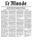

Icones utilisées dans l'OPAC
Icones indiquant les périodiques :-  article
 périodique
périodique
 texte imprimé
texte imprimé texte manuscrit
texte manuscrit partition musicale imprimée
partition musicale imprimée partition musicale manuscrite
partition musicale manuscrite- document cartographique imprimé
 document cartographique manuscrit
document cartographique manuscrit document projeté ou vidéo
document projeté ou vidéo- enregistrement sonore non musical
 enregistrement sonore musical
enregistrement sonore musical- document graphique à deux dimensions
 document électronique
document électronique document multimédia
document multimédia objet à 3 dimensions, artefacts, ...
objet à 3 dimensions, artefacts, ...
Les monographies sont uniquement représentées par l'icone de leur type de support.
Exemple :